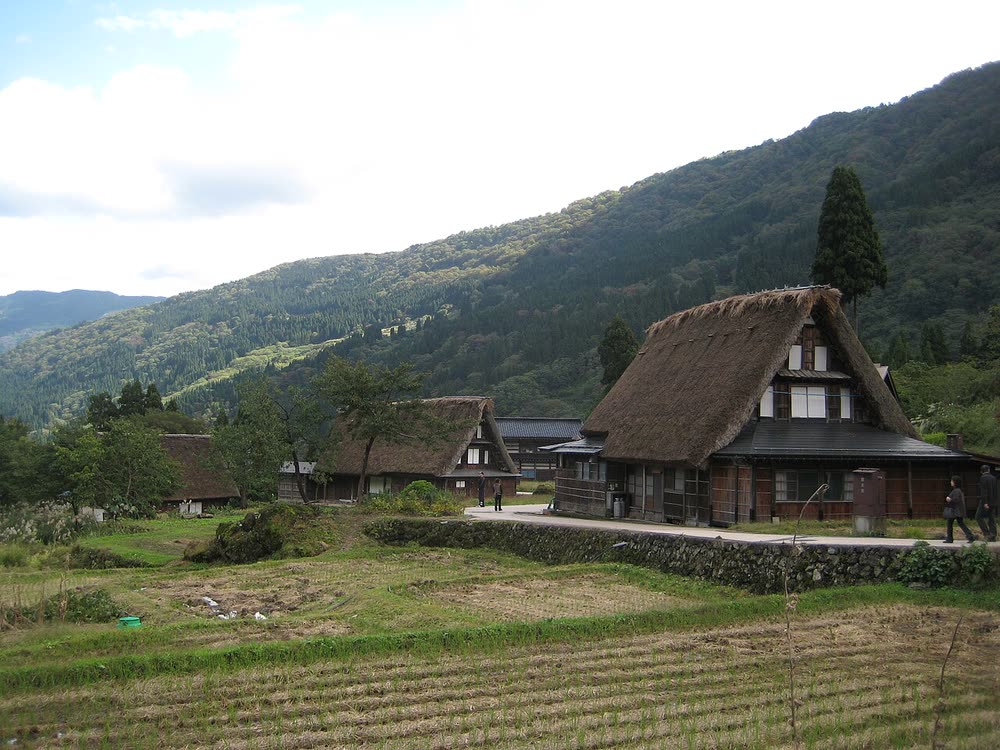
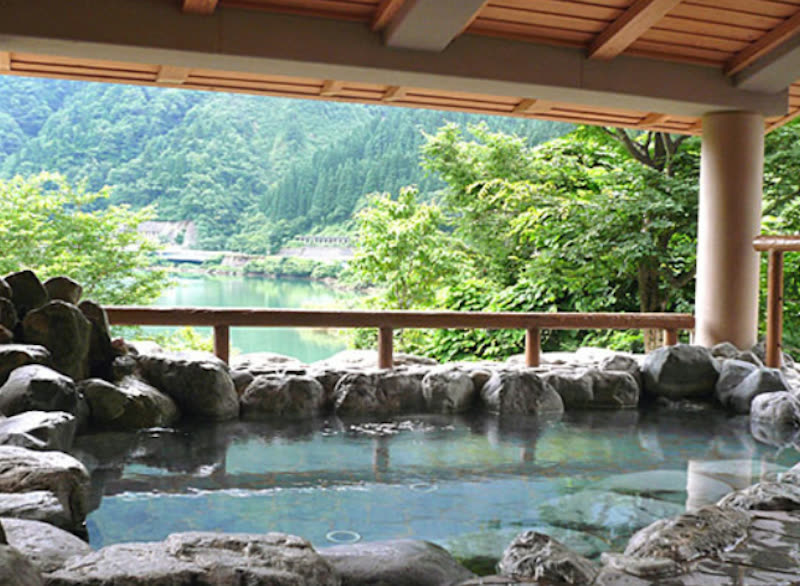
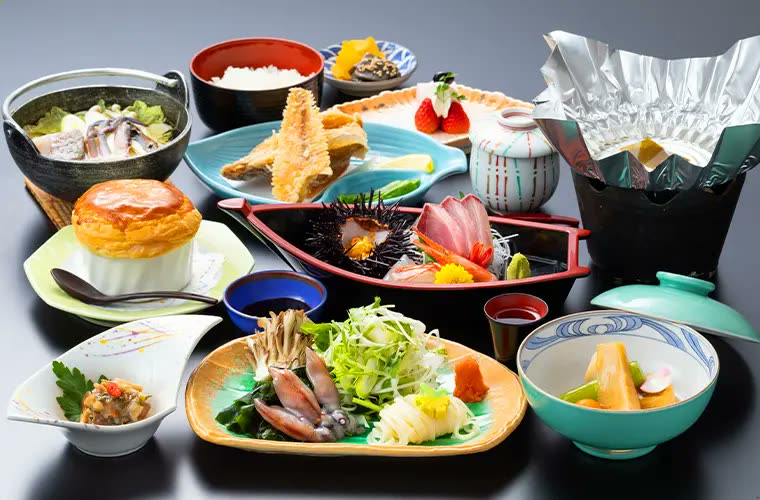
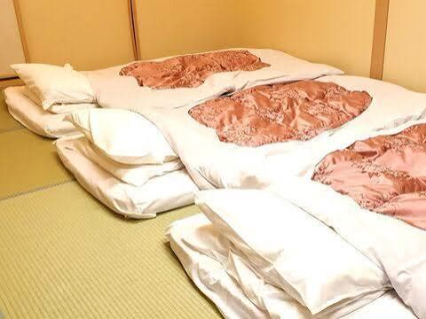
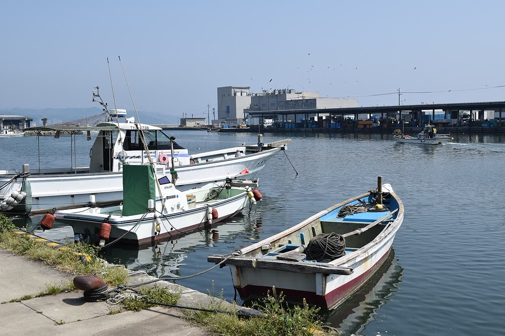
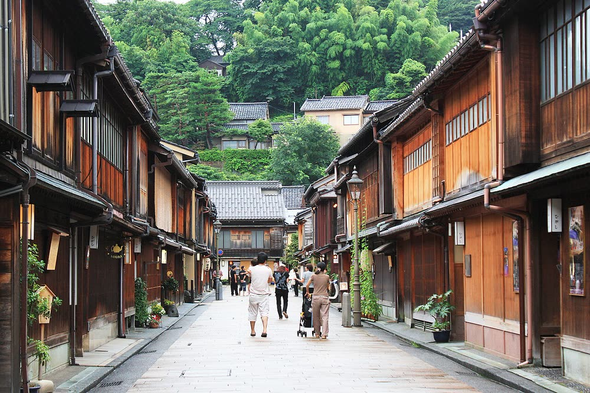
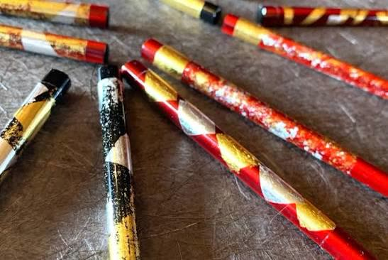
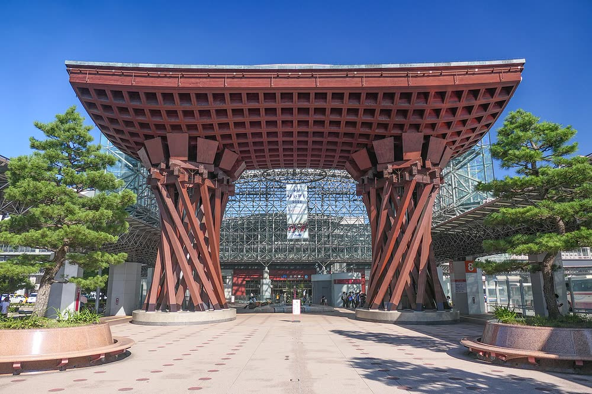

🚌
Around 8:00 AM
Meet & depart from Nagoya Station
Meeting point to be announced. Get comfy—napping on the bus is absolutely fine!
Photo goes hereChartered bus
A little trip after the big day
A slow, cozy getaway with mountains, hot springs, and the flavors of the sea.
Final schedule, exact times and meeting point will be updated here around Nov 10.
Monday, November 23 · Day 1
Meeting point to be announced. Get comfy—napping on the bus is absolutely fine!
A UNESCO-listed village of thatched-roof farmhouses. A quiet mountain village—perfect for a relaxed stroll.

A hot spring tucked in the mountains. Tattoos are OK. Prefer not to bathe? Relax in the lounge—we’ll bring playing cards.

A Japanese set-course dinner featuring fish from Toyama Bay. Drinks with dinner are included.

We’ll take over the charming old Aoyagi Ryokan in Himi. Bring your favorite drinks and snacks for a cozy evening together.

Tuesday, November 24 · Day 2
Fresh seafood breakfast for anyone who feels like joining. Pay individually.

Wander through historic streets lined with teahouses, cafés and gold-leaf shops.

Try applying Kanazawa gold leaf to a pair of chopsticks and take your creation home. Details to come.

Lunch ideas and onward travel options to Tokyo, Osaka, Nagoya and the airports will be shared later.

A few things to make the trip comfortable for everyone.
Late November can be chilly; mountain areas may get close to 0°C. Bring a warm coat and comfortable walking shoes.
Bring your own drinks and snacks for the inn. We’ll stop at a supermarket on the way. Hiro & Sumika will bring a few bottles of sake.
Timings may shift slightly depending on conditions.
Per person
To be confirmed
The fee will be finalized once we’ve settled the details with the bus company. We’ll share the amount and payment method as soon as it’s set.
A small overnight bag is all you need.
For guests staying in Japan for a while
We can store your suitcase at our home in Tokyo so you don’t need to bring it on the trip.
You can bring it with you or send it using an airport luggage delivery counter (Narita, Haneda, etc.). Delivery is usually around ¥2,000–3,000 per bag and takes 1–2 days.
We’ll send our address privately to anyone who needs it. Please keep valuables, your passport and wedding clothes with you.
Trip updates and last-minute details will be shared in our group.
Please install LINE and create your account using your home-country phone number before travelling to Japan. SMS verification may be required, and it’s easier to set it up before you arrive.
Please send Hiro & Sumika a private LINE message or email—there’s no form on this page.